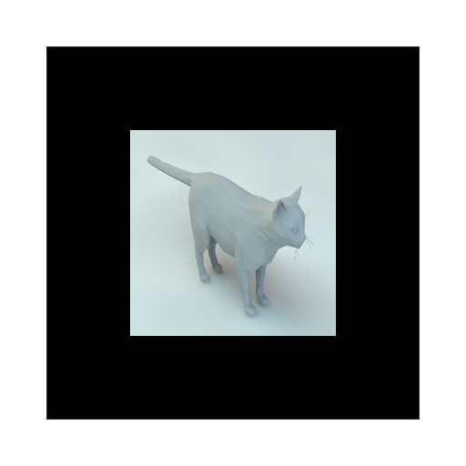

Ar markers

Cat
fire
water
woods

Mirror
What is is?
This is a try for utilizing ar in the browser. In this project, users can use a set of AR markers(attached below) to display various objects. Ideally, different objects will effect each other if they are close. And you can use your keyboard to control some objects. While, it is only partially done due to the limited time.
Link
Ar markers
Cat
fire
water
woods
Mirror
Documentation
For this project, I am using the three.js as the main 3d objects rendering engine and AR.js
. The two are the only libraries I have used for the project. Also, the 3d models are either downloaded from website or borrowed from previous project. The concept of a mirror-cube is borrowed from an example.